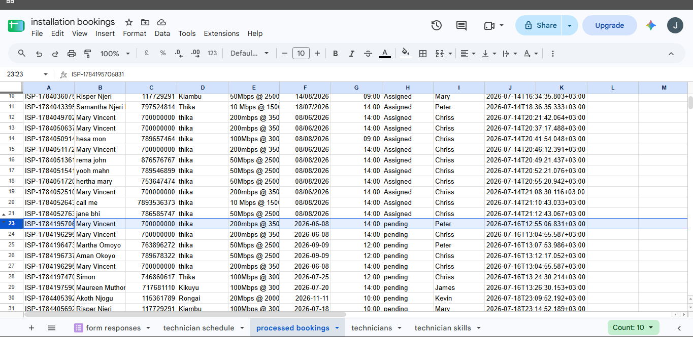
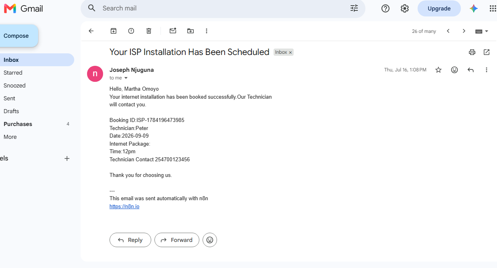

ISP Appointment Booking & Technician Assignment System
An automation workflow designed to process ISP appointment requests, evaluate technician skills and availability, update booking information, and send automated notifications.
Project Overview
This project demonstrates how workflow automation can be applied to ISP appointment management. Instead of manually reviewing technician information and updating bookings, the workflow processes the available information and performs the assignment and notification steps automatically.
Business Problem
ISP appointment management can involve checking technician skills, checking availability, assigning the appropriate technician, updating booking records, and communicating appointment information.
Automation Solution
The n8n workflow connects Google Sheets and Gmail with workflow logic to process technician information, evaluate the available options, update the booking, and trigger an automated notification.
Workflow Architecture
The automation follows a structured sequence of data collection, processing, decision-making, record updating, and notification.
1 Google Sheets Trigger
The workflow begins when the relevant booking or spreadsheet data is received through Google Sheets.
2 Collect Technician Data
Technician information is collected so that the workflow can evaluate the available technicians.
3 Match Skills & Availability
The workflow evaluates technician information and matches the requirements against technician skills and availability.
4 Conditional Decision
An IF condition determines the next action based on whether an appropriate technician can be assigned.
5 Update Booking
Once the appropriate path is determined, the booking information is updated with the workflow result.
6 Gmail Notification
Gmail is used to send an automated notification after the booking process reaches the notification stage.
Technologies Used
The system combines workflow automation with spreadsheet data and email communication.
System Screenshots
Screenshots from the automation workflow and supporting systems used during development.




Automation Benefits
- Reduces repetitive manual appointment-processing tasks.
- Provides a structured method for matching technicians with appointment requirements.
- Uses conditional workflow logic to control different processing paths.
- Keeps booking information organized in Google Sheets.
- Automates communication through Gmail.
- Demonstrates practical application of n8n to an ISP operational process.
Future Improvements
Customer Interface
Add a customer-facing appointment form or web interface for submitting service requests.
Real-Time Availability
Connect the workflow to a more advanced scheduling or database system for real-time technician availability.
SMS Notifications
Extend notifications beyond email by integrating an SMS or messaging service.
Dashboard
Build a dashboard for monitoring appointments, technician assignments, and workflow activity.